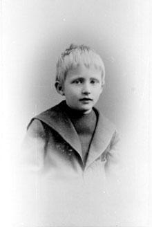
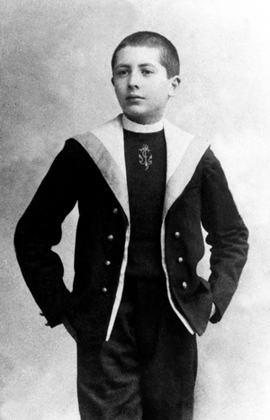
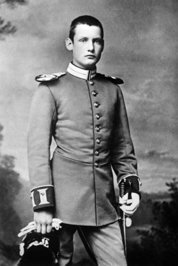
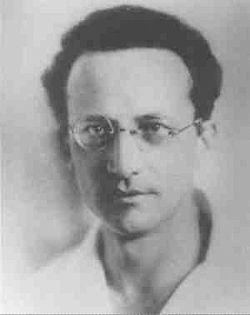

Okul Öncesi Dönem
Doğumu ve Aile Kökeni
Erwin Schrödinger, 12 Ağustos 1887 tarihinde Viyana’da, Avusturya-Macaristan İmparatorluğu sınırları içinde dünyaya geldi. Ailesi, bilim ve kültüre büyük önem veren, entelektüel bir geçmişe sahipti. Babası Rudolf Schrödinger, bir ipek fabrikasının sahibi olmasının yanı sıra amatör bir botanikçiydi. Botanik ve doğa bilimlerine olan ilgisini oğluna da küçük yaşlarda aşılamıştır. Annesi Georgine Emilia Brenda ise İngiliz kökenli bir ailenin kızıdır ve hem İngilizce dili hem de edebi kültür bakımından oldukça donanımlı bir kadındı. Bu çiftin tek çocuğu olan Erwin, hem Almanca hem İngilizce konuşabilen, iki dilliliğin getirdiği avantajlarla büyüyen bir çocuk oldu.
Evde Eğitim ve Bilimle Erken Tanışma
Schrödinger’in erken çocukluk dönemi, modern okul sisteminden ziyade evde aldığı nitelikli eğitimle şekillendi. Anne ve babası, onun gelişimini yakından takip ediyor, öğrenmeye meraklı bu çocuğa hem doğa bilimleri hem de beşeri bilimler konusunda kapsamlı bilgiler sunuyorlardı. Babasından botanik, matematik ve doğa gözlemleriyle ilgili bilgi alırken, annesi aracılığıyla İngiliz edebiyatı, şiir ve dil bilgisiyle tanıştı. Aile ortamı, Erwin’in analitik düşünme becerilerinin temellerini atmasına olanak sağladı. Daha bu yaşlarda gözlem yapma, anlamlandırma ve neden-sonuç ilişkisi kurma gibi bilimsel yetiler geliştirmeye başlamıştı.
Gözlem Yeteneği ve Merak Duygusu
Schrödinger küçük yaşlarından itibaren doğaya büyük ilgi gösteren bir çocuktu. Bitkileri incelemeyi, böcekleri gözlemlemeyi ve doğa olaylarını anlamlandırmaya çalışmayı severdi. Onun bu gözlem yeteneği, bilimsel düşünce yapısının en erken işaretlerini taşıyordu. Nesnelere ve olaylara sadece yüzeysel bir ilgi değil, altında yatan mantığı anlamaya yönelik derin bir merak duyuyordu. Bu özelliği, ileride geliştireceği fizik kuramlarının altında yatan sorgulayıcı zihinsel yapının temelini oluşturdu.
Sanata ve Felsefeye Yatkınlık
Erwin’in çocukluğu sadece bilimle değil, aynı zamanda sanat ve felsefeyle de iç içe geçti. Aile içi sohbetlerde tiyatro eserleri, felsefi düşünceler ve edebi metinler sık sık gündeme geliyordu. Bu sayede küçük yaşta şiirsel düşünceye, soyut kavramlara ve insani duyguların estetik ifadesine ilgi duymaya başladı. Schrödinger’in ileride kuantum fiziğine getireceği felsefi yaklaşımlar –özellikle bilinç ve gözlem üzerine düşünceleri– bu erken dönem etkilerin yansımasıdır. Bilim ile sanat arasında köprü kurabilen nadir zihinlerden biri hâline gelmesinde bu çocukluk deneyimlerinin rolü büyüktür.
İçine Dönük ve Derinlikli Bir Kişilik
Erwin Schrödinger, diğer çocuklara kıyasla daha sessiz ve içine kapanık bir karakter sergiliyordu. Yalnız kalmayı, kendi düşünceleriyle baş başa vakit geçirmeyi tercih eden bir çocuktu. Bu yalnızlık, onun iç dünyasını zenginleştiriyor ve hayal gücünü besliyordu. Aynı zamanda olaylara yüzeysel değil, çok yönlü ve derinlikli bakmasını sağlıyordu. Bu özellikleri, daha sonra geliştireceği soyut fizik modellerinde ve teorik düşünce yapısında belirgin bir şekilde görülecekti.

Okul Çağı
Okul Dönemi ve Akademik Gelişim
Erwin Schrödinger, ilkokul çağına geldiğinde resmi eğitime başlamış olsa da, evde aldığı çok yönlü ve derinlemesine eğitimin izleri okul hayatında da kendini açıkça gösterdi. 1898 yılında Viyana’daki Akademisches Gymnasium’a kaydolan Schrödinger, burada klasik eğitim sisteminin temel taşlarından biri olan Latince ve Yunanca dersleriyle tanıştı. Bu klasik diller, onun analitik düşünme becerisini pekiştirirken, aynı zamanda felsefe ve mantık gibi soyut düşünce gerektiren alanlara duyduğu ilgiyi de besledi. Özellikle matematik ve fizik derslerinde gösterdiği üstün başarı, öğretmenlerinin kısa sürede dikkatini çekti. Sayılarla kurduğu ilişki, sadece teknik bir yetenek değil; aynı zamanda yaratıcı bir sezgi gücünü de yansıtıyordu. Bu yönüyle Erwin, formülleri ezberlemek yerine onların arkasındaki düşünsel yapıyı kavramaya çalışıyordu. Bu tavrı, onu ilerleyen yıllarda sıradan bir bilim insanı değil, düşünce dünyasında iz bırakan bir teorisyen haline getirecekti.
Disiplinli Çalışma ve Çok Yönlülük
Schrödinger’in eğitim hayatında en dikkat çekici özelliklerinden biri, çok yönlülüğünü koruyarak her alana aynı titizlikle yaklaşmasıydı. Bilimsel derslerin yanı sıra edebiyat, tarih ve felsefe gibi beşeri bilimlere de ciddi bir ilgi gösteriyordu. Klasik Alman edebiyatına duyduğu ilgi, zaman zaman bilimsel çalışmalarından uzaklaşıp şiir yazmasına, düşüncelerini estetik bir dille ifade etmesine olanak tanıdı. Bu çok yönlülük, onun bilimle sanatı, sezgiyle analizi bir araya getiren özgün düşünce tarzının temelini oluşturdu. Okul yıllarında dışa dönük bir sosyal çevreden ziyade, kendini geliştirebileceği sessiz alanlara yönelen Schrödinger, laboratuvarlarda ve kütüphanelerde vakit geçirmeyi tercih ediyordu. Bu ortamlar, onun derinlemesine düşünme alışkanlığını güçlendiriyor ve içsel dünyasını bilimsel merakıyla bütünleştiriyordu.
İlk Bilimsel Etkilenmeler ve Yönelimler
Akademisches Gymnasium’da aldığı eğitim sırasında, dönemin bilimsel gelişmelerine duyduğu ilgi giderek arttı. Özellikle James Clerk Maxwell’in elektromanyetizma kuramı ve Ludwig Boltzmann’ın istatistiksel mekanik üzerine çalışmaları, genç Schrödinger üzerinde derin bir etki bıraktı. Bu isimlerin yazılarını okumak, ona fiziğin sadece deneysel değil, aynı zamanda düşünsel bir keşif alanı olduğunu fark ettirdi. Bu dönemde, doğaya duyduğu çocukluk merakı, artık bilimsel bir temele oturmuştu. Sadece gözlem yapmak değil, gözlemlerin altında yatan temel ilkeleri açıklamak istiyordu. Schrödinger’in kafasında şekillenmeye başlayan bu tutku, onu ileride teorik fiziğin derin sularına sürükleyecek olan yolculuğun ilk adımlarını temsil ediyordu.
Üniversiteye Hazırlık ve Gelecek Planları
Lise yıllarının sonlarına doğru, Schrödinger’in zihni giderek daha net bir yön kazanmaya başladı. Fen bilimleriyle olan ilişkisi artık bir merak olmaktan çıkmış, yaşam boyu sürecek bir bağlılığa dönüşmüştü. 1906 yılında, Viyana Üniversitesi’nin fizik bölümüne girmeye karar verdiğinde, ailesi bu kararı tam destekle karşıladı. Çocukluk yıllarından itibaren şekillenen gözlem yeteneği, felsefi eğilimleri ve analitik düşünce becerileri, bu tercihi doğal bir sonuç haline getirmişti. Okul dönemi, Schrödinger’in düşünsel evreninin temellerini attığı, bilim ile sanat arasında kurduğu köprüyü sağlamlaştırdığı ve zihinsel disiplinini inşa ettiği bir süreç olarak büyük önem taşır. Bu yıllarda geliştirdiği alışkanlıklar ve içsel tutku, onu sadece bir fizikçi değil, aynı zamanda bilimsel düşüncenin felsefi yönlerine cesaretle yaklaşabilen bir entelektüel olarak şekillendirmiştir.
Üniversite Dönemi ve Düşünsel Derinleşme
1906 yılında Viyana Üniversitesi’ne kaydolan Erwin Schrödinger, artık doğaya olan çocukluk merakıyla değil, onu anlamlandırmak isteyen genç bir bilim insanı adayı olarak akademik yaşamına adım atmıştı. Üniversite ortamı, onun için sadece bilgi edinme alanı değil, aynı zamanda düşünsel derinlik kazanma, sorgulama ve entelektüel bir kimlik oluşturma fırsatı sundu. Bu yeni ortamda, bağımsız düşünme yeteneği ve disiplinli çalışma alışkanlığıyla kısa sürede öne çıktı. Üniversitede özellikle klasik fizik, matematiksel analiz ve termodinamik alanlarında derinlemesine bilgi edinen Schrödinger, dönemin önemli fizikçilerinden Friedrich Hasenöhrl’ün öğrencisi oldu. Hasenöhrl, Maxwell’in elektromanyetik kuramı ve enerjinin doğası üzerine yürüttüğü çalışmalarla tanınıyordu ve genç Schrödinger için güçlü bir ilham kaynağıydı. Hocasıyla yaptığı tartışmalar, onun düşünsel sınırlarını zorlamasını ve fiziksel olgulara daha soyut ve kavramsal bir çerçeveden bakmasını sağladı.
Matematiğe Dayalı Düşünce ve Teorik Fizik Eğilimi
Üniversite yıllarında Schrödinger’in eğilimleri giderek daha belirgin hâle geldi. Deneysel fizik onu elbette ilgilendiriyordu, ancak asıl tutkusu, doğa yasalarının altında yatan matematiksel düzeni keşfetmekti. Bu nedenle, teorik fiziğe yöneldi. Formülleri sadece uygulamakla kalmıyor; onların türetildiği mantıksal yapıyı anlamaya çalışıyor, her fiziksel ifadenin arkasında yatan felsefi anlamı sorguluyordu. Bu dönemde diferansiyel denklemler, varyasyonel hesaplamalar ve dalga teorileri üzerine yoğunlaştı. Bu konulara gösterdiği ilgide, onun doğaya karşı geliştirdiği çocukluk merakının, artık soyut düşünceyle birleşerek derinleştiği görülüyordu. Schrödinger, doğayı anlamanın yolunun sadece gözlem değil, matematiksel betimleme olduğunu erken yaşta kavramıştı.
Düşünsel Bağımsızlık ve Akademik Arayış
Viyana Üniversitesi’nin sağladığı geniş entelektüel çevre, Schrödinger’in yalnızca bilimsel değil, aynı zamanda felsefi olarak da kendini geliştirmesini sağladı. Schopenhauer ve Spinoza gibi filozofların eserlerini okuyor, doğa yasaları ile varoluşun anlamı arasında köprü kurmaya çalışıyordu. Bilimi, yalnızca nesnel olguların açıklaması değil, aynı zamanda insan zihninin evrenle kurduğu ilişkinin bir ifadesi olarak görüyordu. Öte yandan, üniversite yaşamı boyunca karakteristik içedönüklüğünü korumaya devam etti. Ders aralarında arkadaşlarının aksine kalabalık sosyal ortamlardan uzak durur, kütüphanede ya da kampüsün sessiz köşelerinde zaman geçirirdi. Bu yalnız anlar, onun düşüncelerini derinleştirdiği, sezgisel yaklaşımlarını şekillendirdiği verimli süreçlerdi.
Askerlik Öncesi Son Dönem: Akademik Olgunlaşma
Schrödinger, 1910 yılında üniversite eğitimini tamamladığında artık yalnızca teknik olarak donanımlı değil; aynı zamanda kendi düşünsel duruşunu oluşturmuş, bilimsel bakış açısını belirlemiş bir genç entelektüeldi. Aynı yıl içerisinde doktora derecesini aldı ve fizik asistanı olarak görev yapmaya başladı. Bu dönemde, doğrudan bilimsel kariyerine geçmeden önce, birkaç yıl sürecek olan askerlik ve savaş yılları araya girecekti. Ancak üniversite yıllarında kazanmış olduğu zihinsel disiplin, bu zorunlu arada bile bilimle bağını koparmayacak kadar derin ve kalıcıydı.

Savaş Yılları
Birinci Dünya Savaşı Yılları: Bilimle Bağını Sürdürdüğü Zorunlu Ara
Erwin Schrödinger’in yaşamındaki bir sonraki dönemeç, Avrupa’nın tarihsel çehresini değiştiren büyük bir kırılma anına, Birinci Dünya Savaşı yıllarına denk geldi. 1914 yılında savaşın patlak vermesiyle birlikte, tıpkı pek çok genç Avusturyalı gibi o da orduya katılmak zorunda kaldı. Bilimsel çalışmalarının yeni yeni gelişmeye başladığı bu dönemde, zorunlu askerlik onun yaşamına hem fiziksel hem de zihinsel açıdan bambaşka bir yön verdi. Savaş, Schrödinger için yalnızca cephe gerçeğiyle yüzleşmek anlamına gelmiyordu; aynı zamanda bilimsel üretkenliğin askıya alındığı, belirsizlik ve bekleyişle dolu bir süreçti. Ancak onun karakterinde zaten var olan içe dönüklük, bu zorlu dönemi kişisel gelişim için değerlendirmesine olanak tanıdı. Boş zamanlarında notlar alıyor, bilimsel makaleler okuyor ve zihninde henüz şekillenmemiş fikirleri olgunlaştırıyordu. Bir anlamda, savaş onun düşünsel bir laboratuvarı hâline geldi.
Cephede Bilimle Yaşam Arasında Bir Denge
Schrödinger aktif cephe görevlerinden ziyade, Avusturya ordusunda topçu birliğinde görev aldı. Bu görev, ona az da olsa bilimsel düşünceyle temas kurabileceği bir alan sundu. Topçu hesaplamalarında kullanılan balistik formüller, fiziksel ilkelerin gerçek dünyadaki uygulamalarıydı ve Schrödinger bu hesaplamaları yalnızca bir görev değil, aynı zamanda zihinsel bir uğraş olarak da ele aldı. Zor koşullara rağmen, savaş yıllarında bilimden bütünüyle kopmadı. Bu yıllarda kendisine yakın bulduğu bazı bilimsel ve felsefi metinleri yanında taşıyor, gece nöbetleri arasında bunları okuyarak düşünsel canlılığını koruyordu. O, savaşın insan ruhunda yol açtığı çöküşe karşı bilimsel tutkusunu bir tür direnç noktası olarak görüyordu. Bu özellik, onun yalnızca bir bilim insanı değil, aynı zamanda derin bir düşünür olduğunu da gösteriyordu.
İnsan Doğasına ve Yaşama Dair Sorgulamalar
Birinci Dünya Savaşı, Schrödinger’in yalnızca bilimsel değil, felsefi olarak da önemli sorgulamalara yönelmesine neden oldu. Ölüm, kaos ve insan iradesi gibi temalar, onun zihninde hem bilimsel hem de varoluşsal anlamlar kazanmaya başladı. Savaşın anlamsızlığına tanıklık ettikçe, evrendeki düzen ve yasaların peşinden gitme arzusu daha da güçlendi. İnsan davranışı ile doğa yasaları arasındaki derin ayrımı fark ettikçe, fiziğin bu karmaşık evrende bir tür sadelik arayışı olduğunu daha çok benimsedi. Bu yıllar, Schrödinger’in iç dünyasında bilimsel sezgiyle felsefi düşünceyi daha sıkı bir biçimde örmeye başladığı bir dönem olarak öne çıkar. Bilimin kesinliğiyle insan yaşamının rastlantısallığı arasındaki gerilim, onun zihinsel evreninde derin izler bıraktı.
Savaştan Akademiye Dönüş Hazırlığı
1918 yılında savaş sona erdiğinde, Schrödinger de cephe görevinden ayrıldı. Artık yirmili yaşlarının sonuna gelmiş, olgunluk eşiğinde bir bilim insanıydı. Savaş her ne kadar bilimsel gelişimini geçici olarak sekteye uğratmış olsa da, onu düşünsel anlamda derinleştirmiş ve bilimsel tutkusunu pekiştirmişti. Önünde yeniden akademiye dönmek, araştırmalarına başlamak ve kuramsal fizik alanında kendi izini bırakmak için yeni bir yol açılmıştı. Savaş yıllarının ardından Schrödinger, bilime kaldığı yerden değil, aslında çok daha derin bir noktadan devam edecekti. Gözlem, sabır ve içe dönüşle geçen bu dönem, onun düşünce yapısının merkezinde yer alacak olan sezgisel kurgu ve soyutlama gücünü beslemişti.

Meslek Hayatı
Çalışma Yaptığı Alanlar
Doğumu ve Aile Kökeni
Erwin Schrödinger, 12 Ağustos 1887 tarihinde Viyana’da, Avusturya-Macaristan İmparatorluğu sınırları içinde dünyaya geldi. Ailesi, bilim ve kültüre büyük önem veren, entelektüel bir geçmişe sahipti. Babası Rudolf Schrödinger, bir ipek fabrikasının sahibi olmasının yanı sıra amatör bir botanikçiydi. Botanik ve doğa bilimlerine olan ilgisini oğluna da küçük yaşlarda aşılamıştır. Annesi Georgine Emilia Brenda ise İngiliz kökenli bir ailenin kızıdır ve hem İngilizce dili hem de edebi kültür bakımından oldukça donanımlı bir kadındı. Bu çiftin tek çocuğu olan Erwin, hem Almanca hem İngilizce konuşabilen, iki dilliliğin getirdiği avantajlarla büyüyen bir çocuk oldu.
Evde Eğitim ve Bilimle Erken Tanışma
Schrödinger’in erken çocukluk dönemi, modern okul sisteminden ziyade evde aldığı nitelikli eğitimle şekillendi. Anne ve babası, onun gelişimini yakından takip ediyor, öğrenmeye meraklı bu çocuğa hem doğa bilimleri hem de beşeri bilimler konusunda kapsamlı bilgiler sunuyorlardı. Babasından botanik, matematik ve doğa gözlemleriyle ilgili bilgi alırken, annesi aracılığıyla İngiliz edebiyatı, şiir ve dil bilgisiyle tanıştı. Aile ortamı, Erwin’in analitik düşünme becerilerinin temellerini atmasına olanak sağladı. Daha bu yaşlarda gözlem yapma, anlamlandırma ve neden-sonuç ilişkisi kurma gibi bilimsel yetiler geliştirmeye başlamıştı.
Gözlem Yeteneği ve Merak Duygusu
Schrödinger küçük yaşlarından itibaren doğaya büyük ilgi gösteren bir çocuktu. Bitkileri incelemeyi, böcekleri gözlemlemeyi ve doğa olaylarını anlamlandırmaya çalışmayı severdi. Onun bu gözlem yeteneği, bilimsel düşünce yapısının en erken işaretlerini taşıyordu. Nesnelere ve olaylara sadece yüzeysel bir ilgi değil, altında yatan mantığı anlamaya yönelik derin bir merak duyuyordu. Bu özelliği, ileride geliştireceği fizik kuramlarının altında yatan sorgulayıcı zihinsel yapının temelini oluşturdu.
Sanata ve Felsefeye Yatkınlık
Erwin’in çocukluğu sadece bilimle değil, aynı zamanda sanat ve felsefeyle de iç içe geçti. Aile içi sohbetlerde tiyatro eserleri, felsefi düşünceler ve edebi metinler sık sık gündeme geliyordu. Bu sayede küçük yaşta şiirsel düşünceye, soyut kavramlara ve insani duyguların estetik ifadesine ilgi duymaya başladı. Schrödinger’in ileride kuantum fiziğine getireceği felsefi yaklaşımlar –özellikle bilinç ve gözlem üzerine düşünceleri– bu erken dönem etkilerin yansımasıdır. Bilim ile sanat arasında köprü kurabilen nadir zihinlerden biri hâline gelmesinde bu çocukluk deneyimlerinin rolü büyüktür.
İçine Dönük ve Derinlikli Bir Kişilik
Erwin Schrödinger, diğer çocuklara kıyasla daha sessiz ve içine kapanık bir karakter sergiliyordu. Yalnız kalmayı, kendi düşünceleriyle baş başa vakit geçirmeyi tercih eden bir çocuktu. Bu yalnızlık, onun iç dünyasını zenginleştiriyor ve hayal gücünü besliyordu. Aynı zamanda olaylara yüzeysel değil, çok yönlü ve derinlikli bakmasını sağlıyordu. Bu özellikleri, daha sonra geliştireceği soyut fizik modellerinde ve teorik düşünce yapısında belirgin bir şekilde görülecekti.